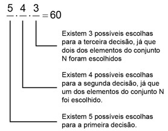
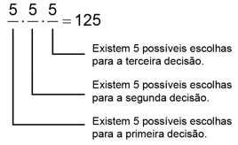
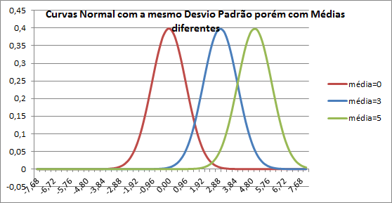
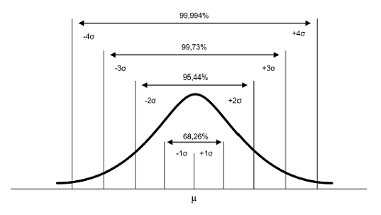
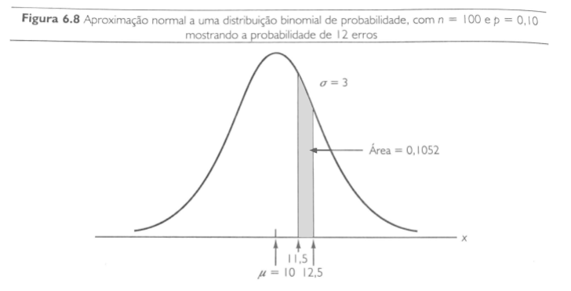
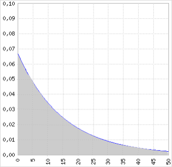
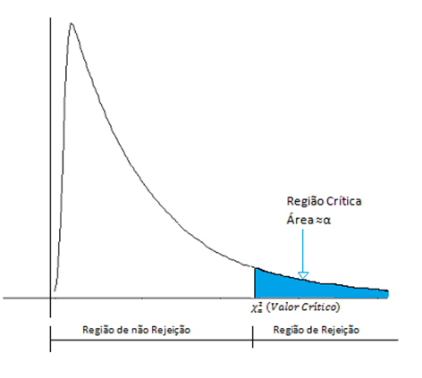
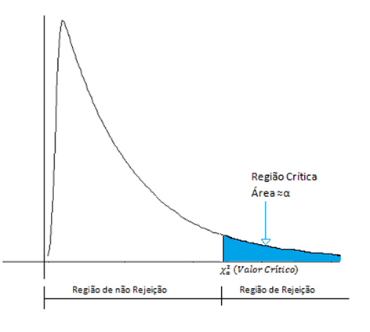
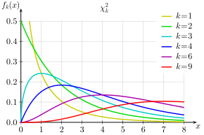
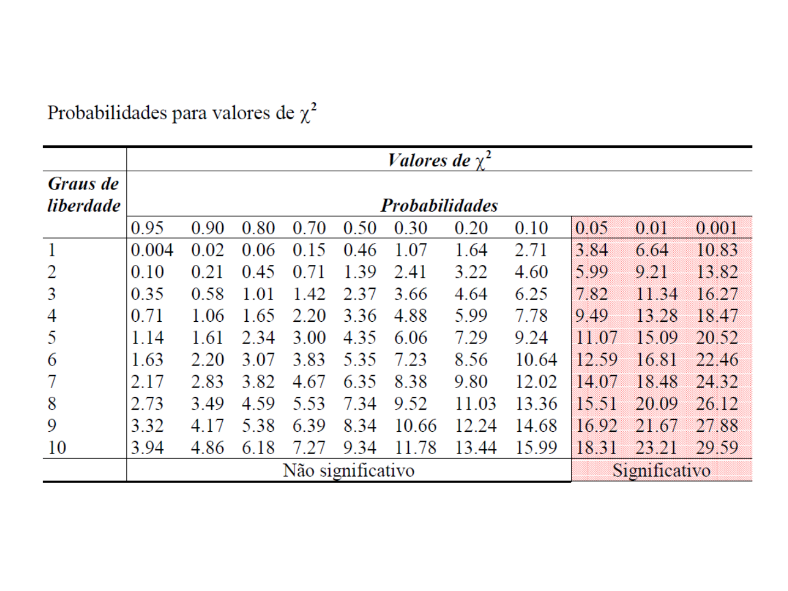

9 Probabilidade
- Definição
- A medida da incerteza
- Indica a chance(a medida da possibilidade) ou a probabilidade de um evento ocorrer
- Quantificação do conhecimento que temos sobre um particular evento
- Regras
- 0 = impossível ocorrer
- 1 = certamente ocorrerá
- A probabilidade não pode ser negativa ou maior que 1. Deve variar entre 0 e 1 (incluso)
- A soma das probabilidades de um evento simples, em um espaço da amostra, deve ser igual a 1
- O complemento de um evento A é definido como todos os resultados, em um espaço de amostra, que não fazem parte do evento A.
9.1 Conceitos
9.1.1 Espaço da amostra
Todos os resultados possíveis de um experimento.
Ex: Dados - > números de 1 a 6
9.1.2 Evento
Um ou mais resultados de um experimento
Ex: O jogar o dado
9.1.3 Experimento
E o processo de medir ou observar uma atividade com o propósito de coletar dados.
9.1.3.1 Experimento simples
Experimento simples: duas opções (moeda, cara ou coroa)
- Tipos
- Experimento determinístico
- ex. Caneta caindo no chão - resultado sempre o mesmo
- Experimento aleatório
- ex. distância entre a caneta que caiu em relação a parede- resultado sempre diferente
- Experimento determinístico
Ex: Jogar dados
9.1.3.2 Experimento de Múltiplas Etapas
Um experimentos em múltiplas etapas é nada mais que realizar diversas vezes um experimento.
Ex: Jogar duas moedas
O espaço amostral seria:
\(\small S = [(H, H), (H,T),(T,H),(T,T)]\)
- H = Head T=Tail, sendo 4 os resultado experimentais.
9.1.3.2.1 Regra de Contagem
\[\small \textrm{Regra de contagem} = n_1×n_2×....×n_k\]
Sendo um experimento uma sequência de k etapas, com \(n_1\) resultados possíveis na primeira etapa, com \(n_2\) resultados possíveis na segunda etapa, e assim por diante.
No caso de um evento envolvendo seis moedas:resultados possíveis.
9.1.3.2.1.1 Diagrama de Árvore
Uma forma de visualizar o desdobramento desses eventos é por meio de diagrama de Árvore:
9.1.3.2.2 Regra de contagem de combinações
O número de combinações de N objetos, tomados n a cada vez, é:
\[\small C_n^N= (\frac{N}{n}) = \frac{N!}{n!(N - n)!}\]
Permite contar o número de resultados experimentais quando o experimento envolve escolher n objetos de um conjunto ( geralmente maior) de N objetos.
Exemplo:
\(\small N = [ A, B, C, D, E]\)
\(\small n = 2\)
\[\small C_n^N= (\frac{N}{n}) = \frac{N!}{n!(N - n)!}\]
\(\small C_2^5= (\frac{5}{2}) = \frac{5!}{2!(3)!}\)
\(\small \frac{5!}{2!(3)!} =\frac{5×4×3×2×1}{2×1×3×2×1} = \frac{120}{12}= 10\)
| N | S |
|---|---|
| 1 | AB |
| 2 | AC |
| 3 | AD |
| 4 | AE |
| 5 | BC |
| 6 | BD |
| 7 | BE |
| 8 | CD |
| 9 | CE |
| 10 | DE |
## [1] 109.1.3.2.3 Regra de contagem de Permutações
O número de permutações de N objetos, tomados a cada n vez, é dado por:
\[\small P_n^N= n!(\frac{N}{n}) = \frac{N!}{(N - n)!}\]
O número de resultados experimentais quando n objetos são escolhidos de um conjunto de N objetos em que a ordem de escolha é importante.
Exemplo:
\(\small N = [ A, B, C, D, E]\)
\(\small n = 2\)
\[\small P_n^N= n!(\frac{N}{n}) = \frac{N!}{(N - n)!}\]
\(\small P_2^5= 2!(\frac{5}{2}) = \frac{5!}{(5 - 2)!}\)
\(\small \frac{5!}{3!}=\frac{5×4×3×2×1}{3×2×1} = \frac{120}{6}=20\)
| S |
|---|
| AB e BA |
| AC e CA |
| AD e DA |
| AE e EA |
| BC e CB |
| BD e DB |
| BE e EB |
| CD e DC |
| CE e EC |
| DE e ED |
| A | B |
| A | C |
| A | D |
| A | E |
| B | A |
| B | C |
| B | D |
| B | E |
| C | A |
| C | B |
| C | D |
| C | E |
| D | A |
| D | B |
| D | C |
| D | E |
| E | A |
| E | B |
| E | C |
| E | D |
9.2 Atribuição de probabilidade
Para atribuição de probabilidade e preciso atender requisitos básicos:
- A probabilidade atribuída a cada um dos resultados experimentais deve situar-se entre 0 e 1
- \(\small 0 ≤P(E_i) ≤ 1 \forall i\)
- A soma de todas as probabilidades deve ser 1
- \(\small P(E_1) +P(E_2) + .... + P(E_n) =1\)
- Se dois eventos A e B são mutuamente exclusivos, a probabilidade da união do evento A com o evento B equivale a soma da probabilidade do evento A com a probabilidade do evento B, ou seja, \(\small P(A \cup B) = P(A) + P(B)\)
9.2.1 Probabilidade clássica
Utilizada quando sabe-se o número de possíveis resultados e todos são igualmente prováveis
9.2.1.1 Permutação
Permutar elementos significa trocá-los de posição. A maneira de calcular as possibilidades de fazer isso, vai depender da natureza dos elementos a serem permutados.
9.2.1.1.1 Permutação simples
Uma permutação de n objetos distintos é qualquer agrupamento ordenado desses objetos, de modo que, se denominarmos \(\small P_n\) o número das permutações simples dos n objetos, então:
\[\small P_n = n!\]
De fato, imaginemos que dispomos de n objetos distintos para serem colocados em fila, ocupando n posições. Pelo Princípio Multiplicativo, temos n objetos para ocupar a 1ª posição. Ocupada a 1ª posição com um objeto, a 2ª posição pode ser ocupada por qualquer um dos n – 1 objetos restantes. Daí, ocupada a 2ª posição, a terceira posição pode ser ocupada por qualquer um dos n – 2 objetos restantes. Repetindo esse raciocínio até o último objeto, restará para ele a última posição da fila. Logo, pelo Princípio Multiplicativo, teremos: \(\small n × (n – 1) × (n – 2) × (n – 3) × … × 3 × 2 × 1\) que é exatamente o mesmo que escrever \(\small n!\).
Exemplo:
De quantas maneiras pode-se colocar 4 pessoas na fila?
Solução:
Note que, temos 4 pessoas que podem ocupar o 1° lugar da fila. Daí, colocada a primeira pessoa na fila, restam 3 pessoas que podem ocupar o 2° lugar da fila. Em seguida, colocada a 2ª pessoa, agora restam duas pessoas que podem ocupar o 3° lugar da fila. E por fim, colocada a segunda pessoa na fila, sobra uma pessoa para ocupar a última posição. Pelo Princípio Multiplicativo, teremos:
\(\small 4×3×2×1=4!=24\)
## [,1] [,2] [,3] [,4]
## [1,] 1 2 3 4
## [2,] 1 2 4 3
## [3,] 1 3 2 4
## [4,] 1 3 4 2
## [5,] 1 4 2 3
## [6,] 1 4 3 2
## [7,] 2 1 3 4
## [8,] 2 1 4 3
## [9,] 2 3 1 4
## [10,] 2 3 4 1
## [11,] 2 4 1 3
## [12,] 2 4 3 1
## [13,] 3 1 2 4
## [14,] 3 1 4 2
## [15,] 3 2 1 4
## [16,] 3 2 4 1
## [17,] 3 4 1 2
## [18,] 3 4 2 1
## [19,] 4 1 2 3
## [20,] 4 1 3 2
## [21,] 4 2 1 3
## [22,] 4 2 3 1
## [23,] 4 3 1 2
## [24,] 4 3 2 19.2.1.1.2 Arranjos Simples
Considere um conjunto com n elementos distintos. Qualquer sequência de p desses elementos (todos distintos) é chamada de Arranjo Simples \(\small (0 ≤ p ≤ n, \textrm{com n e p naturais})\). Dizemos arranjo simples de n elementos tomados p a p, e simbolizamos por \(\small A_{(n,p)}\)
Esse arranjo simples pode ser calculado da seguinte forma:
\[\small A_{(n,p)} =\frac{n!}{(n-p)!}\]
De fato, suponha que dispomos de n objetos distintos, e escolheremos p desses objetos para serem colocados em uma fila, com p posições. Dessa forma a fila terá p objetos. Pelo Princípio Multiplicativo, temos n objetos para ocupar a 1ª posição. Ocupada a 1ª posição com um objeto, a 2ª posição pode ser ocupada por qualquer um dos \(\small n-1\) objetos restantes. Daí, ocupada a 2ª posição, a terceira posição pode ser ocupada por qualquer um dos \(\small n-2\) objetos restantes. Repetindo esse raciocínio até a posição de número p, teremos para ela \(\small n – p + 1\) objetos disponíveis para ocupá-la.
É importante enfatizar que nos problemas que envolvem a ferramenta do arranjo, a ordem dos termos agrupados importa, uma vez que uma sequência será diferente de uma outra se seus respectivos termos estiverem ordenados de forma distinta.
Exemplo:
Considere os algarismos 1,2,3,4 e 5. Quantos números com algarismos distintos, superiores a 100 e inferiores a 1.000, podemos formar?
Solução
O problema solicita que encontremos todos os números com três algarismos distintos uma vez que, todos os números maiores que 100 e menores que 1.000 têm três dígitos. Dessa forma, temos cinco algarismos disponíveis e usar três deles para formar números de três algarismos distintos. A solução do problema será o arranjo simples de 5 elementos tomados 3 a 3. Ou seja,
\[\small A_{(n,p)} =\frac{n!}{(n-p)!}\]
\(\small A_{(5,3)} =\frac{5!}{(5-3)!}\)
\(\small A_{(5,3)} =\frac{5!}{(2)!}=60\)

## [,1] [,2] [,3]
## [55,] 5 3 1
## [56,] 5 3 2
## [57,] 5 3 4
## [58,] 5 4 1
## [59,] 5 4 2
## [60,] 5 4 39.2.1.1.3 Arranjos com repetição
Considere um conjunto com n elementos distintos. Qualquer sequência de p desses elementos é chamada de Arranjo com repetição (0 ≤ p ≤ n, com n e p naturais). Note que os p elementos podem ser distintos ou não, isto é, pode haver elementos repetidos. Daí o nome, arranjo com repetição.
Dizemos arranjo com repetição de n elementos tomados p a p, e simbolizamos por:
\[\small AR_{n,p} = n^p\]
De fato, suponha que dispomos de n objetos distintos, e escolheremos p desses objetos para serem colocados em uma fila, com p posições. Dessa forma a fila terá p objetos. Pelo Princípio Multiplicativo, temos n objetos para ocupar a \(\small 1^a\) posição. Ocupada a \(\small 1^a\) posição com um objeto, como os objetos na fila podem ser repetidos, para \(2^a\) posição ainda temos n objetos disponíveis. Ocupada a \(\small 1^a\) posição com um objeto, como os objetos na fila podem ser repetidos, para \(\small 2^a\) posição ainda temos n objetos disponíveis. Repetindo esse raciocínio até a última posição, que é a posição de número p, como os objetos podem ser repetidos, ainda teremos n objetos disponíveis para essa posição. Assim, pelo Princípio Multiplicativo, teremos.
\(\small A_{n,p} = n.n.n....n\textrm{ (p vezes)}\)
\(\small A_{n,p} = n^p\)
Exemplo:
Considere os algarismos 1,2,3,4 e 5. Quantos números, superiores a 100 e inferiores a 1.000, podemos formar?
Solução:
O problema solicita que encontremos todos os números com três algarismos (distintos ou não) uma vez que, todos os números maiores que 100 e menores que 1.000 têm três dígitos. Assim, temos 5 elementos e precisamos escolher 3 para formar números, onde os algarismos podem ser repetidos ou não. Dessa forma, a solução do problema será o arranjo com repetição de 5 elementos tomados 3 a 3. Ou seja,
\(\small AR_{n,p} =5.5.5 = 5^3 = 125\)
Note que, assim como foi feito no arranjo simples, podemos também no arranjo com repetição resolver qualquer problema usando o Princípio Multiplicativo, da seguinte forma:

## [,1] [,2] [,3]
## [120,] 5 4 5
## [121,] 5 5 1
## [122,] 5 5 2
## [123,] 5 5 3
## [124,] 5 5 4
## [125,] 5 5 59.2.1.2 Combinação
Conhecemos como combinação a contagem de todos os subconjuntos de k elementos que podemos formar de um conjunto de n elementos
9.2.1.2.1 Combinações Simples
Considere um conjunto com n elementos distintos. Qualquer subconjunto formado por de p desses elementos (todos distintos) é chamado de Combinação Simples (0 ≤ p ≤ n, com n e p naturais). Dizemos combinação simples de n elementos tomados p a p, e simbolizamos porEssa combinação simples pode ser calculada da seguinte forma:
\[\small C_{n,p}=\frac{n!}{p!(n-p)!}\]
É importante enfatizar que nos problemas que envolvem a ferramenta da combinação a ordem dos termos agrupados não importa, uma vez que um subconjunto A será igual a um outro subconjunto B se seus respectivos elementos forem os mesmos.
Exemplo
Uma escola quer organizar um torneio esportivo com 10 equipes, de forma que cada equipe jogue exatamente uma vez com cada uma das outras. Quantos jogos terá o torneio?
Solução
Considere \(\small E = \{E_1, E_2, E_3, … , E_{10}\}\) o conjunto dos times do referido torneio. Note que, resolver esse problema é determinar o número de subconjuntos com dois elementos que podemos formar, a partir dos elementos do conjunto E. Teremos, portanto:
\(\small C_{n,p}=\frac{10!}{2!( 10- 2 )!} = \frac{10 × 9× 8!}{2×1×8!}= \frac{10 × 9}{2×1} = 45\)
Logo, teremos 45 subconjuntos, ou seja, 45 jogos nesse torneio.
## [1] 459.2.1.3 Probabilidade usando combinações
A Probabilidade permite analisar ou calcular as chances de obter determinado resultado diante de um experimento aleatório. São exemplos as chances de um número sair em um lançamento de dados ou a possibilidade de ganhar na loteria.
A partir disso, a probabilidade é determinada pela razão entre o número de eventos possíveis e número de eventos favoráveis, sendo apresentada pela seguinte expressão:
\[\small P(A) = \frac{n(A)}{n(Ω)}\]
Sendo:
\(\small \textrm{P(A)= probabilidade de ocorrer um evento A}\)
\(\small \textrm{n(A)= número de resultados favoráveis}\)
\(\small \textrm{n(Ω)= número total de resultados possíveis}\)
Para encontrar o número de casos possíveis e favoráveis, muitas vezes necessitamos recorrer as fórmulas estudadas em análise combinatória.
Sendo a probabilidade conhecida, agora basta
Exemplo:
A probabilidade de um jogador acertar um lance livre é de 80%. Qual a probabilidade de acertar 3 de 5 arremessos?
solução:
Na situação acima para calcular as combinações de 5 arremessos onde 3 serão acertos temos o coeficiente binomial \(\small \binom{3}{5}\), portanto:
\(\small \binom{3}{5}) = \frac{5!}{3!(5-3)!} =\frac{5×4}{2} = 10\)
\[\small P(Acertos)^{n° acertos} × P(Erros)^{n° erros} × n° combinações\]
\(\small 0,8^3×0,2^2×10\)
\(\small 0,512×0,04×10 = 0,2048\)
Portanto, em 5 arremessos, existe 20,48% de acertar 3. E são 10 as combinações diferentes possíveis.
Exemplo:
A probabilidade de um jogador acertar um lance livre é de 80%. Qual a probabilidade de acertar pelo menos 3 de 5 arremessos?
Solução:
Na situação acima para calcular as combinações de :
- 5 arremessos onde 3 serão acertos = coeficiente binomial\(\small \binom{3}{5}\)
- 5 arremessos onde 4 serão acertos = coeficiente binomial\(\small \binom{4}{5}\)
- 5 arremessos onde 5 serão acertos = coeficiente binomial\(\small \binom{5}{5}\)
Temos então que:
\(\small \binom{3}{5}=10\)
\(\small \binom{4}{5}=5\)
\(\small \binom{5}{5}=1\)
Então:
\(\small (0,8^3×0,2^2×10) + (0,8^4×0,2^1× 5) + (0,8^5×0,2^1×1)\)
\(\small 0,2048 + 0,4096 +0,32768 = 0,94208\)
Portanto, há 94,208% de chance de se acertar pelo menos 3 arremessos de 5.
## [1] 0.2048## [1] 0.4096## [1] 0.32768dbinom(x=3, size = 5,prob = 0.8) + dbinom(x=4, size = 5,prob = 0.8)+dbinom(x=5, size = 5,prob = 0.8)## [1] 0.942089.2.2 Probabilidade empírica
Usada quando não se tem a informações detalhadas sobre o evento
Ex: Compras em loja, onde não se tem a informação do porquê da compra ou quando foi realizada. Podendo ser calculada registrando o número de clientes que entraram na loja (número total de observações) e o número de clientes que realizaram a compra (frequência que evento A ocorre)
\[ \small P(A)=\frac{\textrm{Frequência em que o evento A ocorre}}{\textrm{Número total de observações}} \]
9.2.3 Probabilidade Subjetiva
Estimada pela experiência e julgamento
- Usada quando
- Não se pode utilizar a clássica nem a empírica
- Não há disponibilidade de realização de experimentos
9.2.4 Probabilidade em eventos compostos
9.2.4.1 Complemento de um evento
Dado um evento A, o complemento de A é definido como o evento que consiste em todos os pontos amostrais que não estão em A. O complemento de A é denotado de \(\small A^C\).
Em termos de probabilidade temos:
\[\small P(A) + P(A^C) = 1\]
E para obtermos a probabilidade de A por meio do completo basta isolar a probabilidade de A.
9.2.4.2 União de eventos
Probabilidade de pelo menos um dos eventos ocorrerem (Ou A ou B, ou Ambos). Denotada por todos os pontos amostrais pertencentes a A, B ou ambos.
Exemplo:
Considere o estoque de uma loja:
| Preta | Branca | Total | |
|---|---|---|---|
| Camisa | 150 | 230 | 380 |
| Jaqueta | 560 | 750 | 1310 |
| Calça | 98 | 140 | 238 |
| Total | 8080 | 1120 | 1928 |
Defina:
- Evento A: Probabilidade selecionar aleatoriamente uma camiseta (branca ou preta)
- Evento B:Probabilidade selecionar aleatoriamente qualquer peça da cor preta
- Probabilidade de A OU B ocorrerem: ou seja, uma peça escolhida aleatóriamente ser preta ou camiseta.
\(\small P(A): \frac{150+230}{1928}=\frac{380}{1928} = 0,1970\)
\(\small P(B): \frac{150+560+98}{1928}=\frac{808}{1928} = 04190\)
\(\small P(A) + P(B) = \frac{380+808}{1928} = 0,6161\)
9.2.4.2.1 Eventos Mutuamente exclusivos
Eventos que não acontecem ao mesmo tempo. Denotados por não possuírem nenhum ponto amostral em comum.
\(\small P(A∪B) = P(A) + P(B)\)
Exemplo:
Considere os pontos obtidos em um jogo:
| Pontos | Homens | Mulheres | Total |
|---|---|---|---|
| 95 | 60 | 30 | 90 |
| 90 | 40 | 80 | 120 |
| 85 | 0 | 40 | 40 |
| Total | 100 | 150 | 150 |
Defina:
- Evento A: Probabilidade de se fazer 90 pontos
- Evento: Probabilidade de se fazer 85 pontos
- Probablidade de se fazer 85 ou 90 pontos.
\(\small P(A)=\frac{120}{250}=0,48\)
\(\small P(B)=\frac{40}{250}=0,16\)
\(\small P(\textrm{A OU B}) =0,48+0,16 = 0,64\)
9.2.4.2.2 Eventos Não Mutuamente Exclusivos
Eventos que podem ocorrer ao mesmo tempo e possuem pontos amostrais em comum.
\(\small P(A∪B) = P(A) + P(B) - P (A∩B)\)
Tal cálculo, se justifica pela fato dos pontos da intercessão estar presente duas vezes, tanto em A quanto em B, portanto, precisa ser retirado uma vez para que o resultado seja preciso.
9.2.4.3 Probabilidade Condicional
A probabilidade condicional, é a probabilidade de um evento ocorrer, dado que outro evento já ocorreu.
\(\small P(A | B)\) = lê-se - Probabilidade de A dado B
\(\small P( A | B) = P(A ∩ B)P(B) P( B | A) = P(A ∩ B)P(A)\)
Ou seja, a probabilidade condicional é dada pelo quociente da probabilidade associada pela probabilidade marginal
Exemplo:
H = o evento de um policial ser homem
M = o evento de um policial ser mulher
A = o evento de um policial ser promovido
\(\small A^C\)= o evento de um policial não ser promovido
| Probabilidade Marginal | Probabilidade Associada |
|---|---|
| P(H) = 0,8 | P(H ∩ \(A^C\)) = 0,56 |
| P(M) = 0,2 | P(H ∩ A) = 0,24 |
| P(A) = 0,27 | P(M ∩ A) =0,03 |
| P(\(A^C\))= 0,73 | P(H ∩\(A^C\)) = 0,17 |
A probabilidade da interseção desses eventos é uma probabilidade associada. Tal informação pode ser vista em uma tabela de probabilidade associada (em vermelho):
| Homens | Mulheres | Total | |
|---|---|---|---|
| Promovidos | 288 | 36 | 324 |
| Não Promovidos | 672 | 204 | 876 |
| Total | 960 | 240 | 1200 |
| Categoria | Homens | Mulheres | Total |
|---|---|---|---|
| Promovidos(A) | 0.24 | 0.03 | 0.27 |
| Não Promovidos \((A^c)\) | 0.56 | 0.17 | 0.73 |
| Total | 0.8 | 0.2 | 1 |
Em verde estão as chamadas, probabilidades marginais, em virtude da localização na tabela de probabilidade associada.
Em rosa está a área que se busca a probabilidade. Ou seja, dada a ocorrência de A qual a probabilidade de B ocorrer? Calcula-se então, dada a probabilidade de B, qual a probabilidade de ocorrer exatamente os pontos amostrais em comum com A. Portanto:
\[\small P( A | B) = \frac{P(A ∩ B)}{P(B)}\]
No exemplo poderíamos usar \(\small P(A | M)\):
\(\small P( A | M) = \frac{P(A ∩ M)}{P(M)}\)
\(\small P( A | M) = \frac{0,03}{0,20}= 0,15\)
9.2.4.3.1 Eventos Dependentes
Um evento dependente é denotado pela mudança da sua chance de ocorrer, devido a ocorrência ou não de outro evento. Portanto:
\(\small P(A | H) ≠ P(A)\)
\(\small P(H | A) ≠ P(H)\)
Então o evento A é afetado pela ocorrência do evento H. Como ocorre no caso das probabilidades condicionais.
9.2.4.3.2 Evento Independentes
Um evento independente é denotado pela não alteração da sua probabilidade de ocorrer, devido a ocorrência ou não de outro evento. Portanto:
\(\small P(A | H) = P(A)\)
\(\small P(H | A) = P(H)\)
Então o evento A não é afetado pela ocorrência do evento H, como ocorre no caso das probabilidades condicionais.
Retormando o exemplo dos pontos em um jogo:
| Pontos | Homens | Mulheres | Total |
|---|---|---|---|
| 95 | 60 | 30 | 90 |
| 90 | 40 | 80 | 120 |
| 85 | 0 | 40 | 40 |
| Total | 100 | 150 | 150 |
Se buscarmos a probabilidade de uma mulher obter 90 pontos teremos:
Evento A: obter 90 pontos Evento B: ser mulher P(A e B): mulher obter 90 pontos
\(\small P(A)= \frac{120}{150}=0,48\)
\(\small P(B)= \frac{150}{250}=0,60\)
\(\small P(\textrm{A e B})= \frac{80}{250} = 0,32\)
\(\small P(\textrm{A ou B})= P(A) + P(B) - P(\textrm{A e B})\)
\(\small P(\textrm{A ou B}) = 0,48+0,60-0,32=0,76\)
9.2.4.4 Intersecção de eventos - Lei da multiplicação
Probabilidade de evento A e evento B ocorrem ao mesmo tempo. Denotado por todos os pontos amostrais de A que também pertencem a B.

9.2.4.4.1 Eventos Dependentes
O cálculo para descobrir a probabilidade da área de intersecção de eventos dependentes:
\(\small P(A ∩B) = P(B) × P(A | B)\)
ou
\(\small P(A ∩B) = P(A) × P(B | A)\)
9.2.4.4.2 Eventos Independentes
O cálculo para descobrir a probabilidade da área de intersecção de eventos dependentes:
\(\small P(A ∩B) = P(A) × P(B)\)
9.3 Teorema de Bayes
O teorema de Bayes pode ser utilizado para revisão de probabilidades quando novas informações são adicionadas. São frequentemente utilizadas na análise de decisão, onde as probabilidades a priori geralmente são subjetivas e depois complementadas com informações de amostra, e então, calculada-se as probabilidades a posteriori.
Então o processo é:

| % de peças boas | % de peças ruins | |
|---|---|---|
| Fornecedor 1 | 98 | 2 |
| Fornecedor 2 | 95 | 5 |

Traduzindo o esquema acima em valores teremos:

Agora, se a pergunta for, dada uma peça ruim, qual a probabilidade de se originar do fornecedor 1? e do fornecedor 2?
Buscamos as seguintes probabilidades:
\(\small P(F1 | R) = P(F1 ∩ R)P(R)\)
\(\small P(F2 | R) = P(F2 ∩ R)P(R)\)
\(\small P(F1 ∩R) = P(F1) × P(R | F1)\)
Em relação a probabilidade de R, sabemos que só ocorre em duas ocasiões:
\(\small (F1 ∩R) e (F2 ∩R)\)
\(\small P(R) = P(F1 ∩R) + P(F2 ∩R)\)
\(\small =P(F1) × P(R | F1) + P(F2) × P(R | F2)\)
\[\small P(F1 | R) = \frac{P(F1) × P(R | F1)}{P(F1) × P(R | F1) + P(F2) × P(R | F2)}\]
\[\small P(F2 | R) = \frac{P(F2) × P(R | F2)}{P(F1) × P(R | F1) + P(F2) × P(R | F2)}\]
Que nada mais é que o teorema de Bayes para dois eventos.
Substituindo os valores na fórmula teremos:
\(\small P(F1 | R) = \frac{P(F1) × P(R | F1)}{P(F1) × P(R | F1) + P(F2) × P(R | F2)}\)
\(\small P(F1 | R) = \frac{ (0,65 )× (0,02)}{(0,65 )× (0,02) + (0,35) × (0,05)}\)
\(\small P(F1 | R) = \frac{0,013}{(0,013) + (0,0175)}\)
\(\small P(F1 | R) = \frac{0,013}{0,305} = 0,4262\)
\(\small P(F2 | R) = \frac{P(F2) × P(R | F2)}{P(F1) × P(R | F1) + P(F2) × P(R | F2)}\)
\(\small P(F2 | R) = \frac{(0,35 )× (0,05)}{(0,65 )× (0,02) + (0,35) × (0,05)}\)
\(\small P(F2 | R) = \frac{0,0175}{(0,013) + (0,0175)}\)
\(\small P(F2 | R) = \frac{0,0175}{0,305} = 0,5738\)
\[\small P( F_i| R) = \frac{P(F_i) × P(R | F_i)}{P(F_1) × P(R | F_1) + P(F_2) × P(R | F_2) + ... + P(F_n) × P(R | F_n)}\]
9.3.1 Abordagem Tabular
Uma abordagem tabular, em tabelas, pode ser útil para efetuar os cálculos do Teorema de Bayes. Segue-se as etapas:
- Monta-se as colunas:
- Eventos \(\small A_i\) , mutuamente exclusivos, que se desejam as probabilidades a posteriori
- Probabilidades a priori dos eventos →\(\small P(A_i)\)
- As probabilidades condicionais da nova informação R dada para cada evento →\(\small P(R | A_i)\)
- Calcule as probabilidades associadas correspondente a cada evento e a nova informação usando a lei da multiplicação →\(\small P( A_i ∩ R) =P( A_i) × P(R | A_i)\)
- Some as probabilidades associadas da etapa anterior e obtenha a probabilidade da nova informação: \(\small P(R)\)
- Na próxima coluna, calcule as probabilidades a posteriori usando a relação básica da probabilidade condicional
- \(\small P(F_i | R) = \frac{P(F_i ∩ R)}{P(R)}\)
| (1.a) Eventos →\(\small (A_i)\) | (1.b) Probabilidade a priori →\(\small P(A_i)\) | (1.a) Probabilidades condicionais →\(\small P(R \|A_i)\) | (2) Probabilidades associadas→\(\small P( A_i ∩ R)\) | (4) Probabilidade a posteriori →\(\small P( A_i \| R)\) |
|---|---|---|---|---|
| A1 | 0,65 | 0,02 | 0,0130 | \(\small \frac{0,0130}{0,0305}=0,4262\) |
| A2 | 0,35 | 0,05 | 0,0175 | \(\small \frac{0,0175}{0,0305}=0,5738\) |
| Total = 1 | Total(3) (P(R)) = 0,0305 | Total = 1 |
9.4 Distribuição de probabilidade
A distribuição de probabilidade de uma variável aleatória descreve como as probabilidades estão distribuídas sobre os valores da variável aleatória. Para uma variável discreta x, a distribuição de probabilidade é definida por uma função de probabilidade, denotada por f(x). A função de probabilidade fornece a probabilidade correspondente a cada um dos valores da variável aleatória. Portanto, associa uma probabilidade a cada resultado numérico de um experimento.
- O domínio dessa função são os valores da variável
- A imagem são as probabilidades da variável assumir cada valor do domínio
- conjunto imagem restrito ao intervalo de 0 e 1
A função precisa atender a duas condições:
- \(\small f(x) ≥ 0\)
- \(\small \sum f(x) = 1\)
9.4.1 Distribuição Discreta
Descreve quantidades aleatórias de dados que podem assumir valores finitos. Pode ser expressa pela seguinte função:
\(\small f(x) = \frac{fr(x)}{n}\)
\(\small fr(x) = \textrm{frequência de x}\)
\(\small n = \textrm{número de elementos}\)
E a versão acumulada:
\[ \small F(x)=P(X \leq x)=\int\_{-\infty}^{x} f(x) d x=\left\{\begin{array}{cll}0, & \text { se } & x<\alpha \\ \frac{x-\alpha}{\beta-\alpha}, & \text { se } & \alpha \leq x<\beta \\ 1, & \text { se }& x \geq \beta\end{array}\right.\]
| Veículos vendidos/ dia | Total dias | Probabilidade |
|---|---|---|
| 0 | 54 | \(\small f(0) = \frac{54}{300} = 0,18\) |
| 1 | 117 | \(\small f(1) = \frac{117}{300} = 0,39\) |
| 2 | 72 | \(\small f(2) = \frac{72}{300} = 0,24\) |
| 3 | 42 | \(\small f(3) = \frac{42}{300} = 0,14\) |
| 4 | 12 | \(\small f(4) = \frac{12}{300} = 0,04\) |
| 5 | 3 | \(\small f(5) = \frac{3}{300} = 0,01\) |
| Total | 300 | 1 |
library(ggplot2)
v<-c(54,117,72,42,12,3)
df<-data.frame(c(0:5),v)
colnames(df)<-c("veiculos","dias")
ggplot(data=df, aes(x=veiculos, y=dias)) +
geom_bar(stat="identity", fill="steelblue")+
geom_text(aes(label=dias), vjust=-0.3, color="black", size=3.5)+
xlab("Veículos Vendidos/dia")+
ylab("Total dias")+
ggtitle("Histograma dos veículos vendidos por dia")+
scale_x_continuous(breaks = c(0,1,2,3,4,5))+
theme_minimal()df["prop"]<-prop.table(df$dias)
ggplot(data=df, aes(x=veiculos, y=prop)) +
geom_bar(stat="identity", fill="steelblue")+
geom_text(aes(label=prop), vjust=-0.3, color="black", size=3.5)+
xlab("Veículos Vendidos/dia")+
ylab("Probabilidade")+
ggtitle("Distribuição de probabilidade para o número de automóveis vendidos por dia")+
scale_x_continuous(breaks = c(0,1,2,3,4,5))+
theme_gray()- Principais tipos de distribuição que utilizam distribuição de probabilidade discreta
- Binominal
- Poisson
- Hipergeométrica
- Bernoulli
9.4.1.1 Distribuição de Probabilidade Binomial
A distribuição de probabilidade binomial é uma distribuição de probabilidade discreta associada a um experimento de múltiplas etapas, chamado experimento binomial.
Um experimento binomial possui quatro propriedades:
- Consiste em uma sequência de n ensaios idênticos
- Dois resultados são possíveis: sucesso e fracasso
- os quais nãos tem conotação positiva ou negativa
- A probabilidade de sucesso, denotada por p não se modifica de ensaio para ensaio. Tampouco a probabilidade de fracasso se modifica, denotada por 1 - p.
- Os ensaios são independentes
Se somente as propriedades: 2,3,4 estiverem presentes, trata-se de um Ensaio de Bernoulli
Exemplo:
Vamos imaginar que nosso experimento seja contar quantos clientes que entram em uma loja de celulares, adquirem um plano pós-pago. Para este experimento, temos 2 possibilidades para cada observação: adquirir ou não adquirir o plano.
Vamos imaginar agora, que historicamente, 10% dos clientes que entram na loja, adquirem um plano pós-pago. Portanto, a probabilidade de sucesso (que vamos chamar de p) para cada observação é 0.10. E a probabilidade de falha (que vamos chamar de q) para cada observação é 0.90.
Temos então que:
\(\small p = \textrm{probabilidade de sucesso}\)
\(\small q = \textrm{probabilidade de fracasso}\)
Então em relação as propriedades observamos que:
- O experimento consiste em n ensaios idênticos (clientes entrando na loja e comprando ou não o plano de celular)
- Somente dois resultados são possíveis: comprar ou não comprar o plano de celular
- A probabilidade de p= 0,10 e q = 0,90. Tais probabilidades não se alteram de um ensaio para outro.
- Os ensaios são independentes. Pois um cliente adquirir um plano não interfere na probabilidade de outro cliente adquirir também.
Ou seja, se trata de um experimento binomial.

Valor de x = número de clientes que fizeram a compra
O número de resultados que resultam em x sucessos em n ensaios pode ser calculado com a fórmula abaixo:
\[\small \binom{n}{x}=\frac{n!}{x!(n-x)!}\]
Em que:
\(\small n! = n(n-1)(n-2)....(2)(1)\)
\(\small 0! = 1\)
Obs: Na calculadora faz-se (n) nCr (x)
No caso, se buscarmos quantas formas podemos obter 2 sucessos em 3 ensaios:
Então, x = 2 e n = 3
\(\small \binom{n}{x}=\frac{n!}{x!(n-x)!}\)
\(\small \binom{3}{2}=\frac{3!}{2!(2 -3)!}\)
\(\small \frac{3×2×1}{(2×1)(1)}=\frac{6}{2} = 3\)
Portanto, há três possibilidades de se obter 2 sucesso em 3 ensaios. O que pode ser comprovado ao observar a árvore de resultados experimentais.
Mas como descobrir a probabilidade de se obter um certo número de sucessos? Basta multiplicar as probabilidades de p e q correspondentes. Então no caso de se buscar 2 sucessos em 3 ensaios teremos:
\(\small p = 0,10\)
\(\small p×p×q\)
\(\small p×p×( 1 -p)\)
\(\small (0,10)×(0,10)×(1 - 0,10)\)
\(\small (0,10)×(0,10)×(0,90 ) =0,009\)
Obs: Independente da sequência exata do resultado, sendo a proporção de sucessos e fracassos a mesma a probabilidade é a mesma.
Juntando a formulação de quantidades de x sucessos em n ensaios com a probabilidade de se obter tal resultado temos a Função Probabilidade Binomial:
\[ \small f(x)=\binom{n}{x}p^x (1-p)^{(n-x)} \]
\(\small \binom{n}{x}=\frac{n!}{x!(n -x)!}\)
\(\small f(x) = \textrm{a probabilidade de x sucessos em n ensaios}\)
\(\small n = \textrm{o número de ensaios}\)
\(\small x = \textrm{o número de sucessos}\)
\(\small p = \textrm{a probabilidade de sucessos em qualquer ensaio}\)
\(\small 1 - p = \textrm{a probabilidade de fracasso em qualquer ensaio}\)
Aplicando a fórmula para todos os casos teremos:
| x | f(x) |
|---|---|
| 0 | \(\small \frac{3!}{0!3!} = (0,10)^0(0,90)^3 =0,729\) |
| 1 | \(\small \frac{3!}{1!2!} = (0,10)^1(0,90)^2 =0,081\) |
| 2 | \(\small \frac{3!}{2!1!} = (0,10)^2(0,90)^1 =0,009\) |
| 3 | \(\small \frac{3!}{3!0!} = (0,10)^3(0,90)^0 =0,001\) |
9.4.1.1.1 Valor Esperado
O valor esperado, ou média, de uma Distribuição Binomial, representa a média de longo prazo de sucessos esperados, baseado no número de observações.
\[\small E(x) = μ = n×p\]
Ou seja, no caso das compras de planos de celular o valor esperado para 5 ensaios seria:
\(\small E(x) = μ = 5×0,1 = 0,5\)
9.4.1.1.2 Variância e Desvio padrão
A Variância de uma Distribuição Binomial, representa a variação que existe no número de sucessos (p) sobre um número (n) de observações. Dado pela fórmula:
\(\small Var(x) = σ^2 = n×p×(1 - p)\)
\(\small σ = \sqrt{n ×p ×(1 - p)}\)
Ou seja, no caso das compras de planos de celular o valor esperado para 5 ensaios seria:
\(\small Var(x) = σ^2 = 5×0,1×(1 - 0,1)\)
\(\small Var(x) = σ^2 = 5×0,1×0,9 = 0,45\)
\(\small σ =\sqrt{5 ×0,1 ×0,9} = 0,67\)
9.4.1.1.3 R
Exemplo: A probabilidade de um paciente com um ataque cardíaco morrer do ataque é de 0.04 (ou seja, 4 de 100 morrem do ataque). Suponha que tenhamos 5 pacientes que sofrem um ataque cardíaco, qual é a probabilidade de que todos sobrevivam?
Para este exemplo, vamos chamar um sucesso um ataque fatal (p = 0.04).
Temos n = 5 pacientes e queremos saber a probabilidade de que todos sobrevivam ou, em outras palavras, que nenhum seja fatal (0 sucessos).
# X = Número de sobreviventes ao ataque
#p = 0.04
#n = 5
#dbinom(X, n, p)
a <- dbinom(0, 5, 0.04)
print(a)## [1] 0.81537279.4.1.2 Distribuição Uniforme
Distribuição onde a probabilidade de todos os elementos é a mesma.
\[\small f(x) = \frac{1}{n}\]
\(\small n = \textrm{número de valores que a variável aleatória pode assumir}\)
É o caso de jogar dados não viciados.
9.4.1.2.1 Valor Esperado
Valor esperado, ou média, de uma variável aleatória é a medida da posição central da variável aleatória. A qual é dada pela fórmula:
\[\small E(x) = μ = \sum x×f(x)\]
Ou seja, deve-se multiplicar cada valor da variável aleatória pela sua probabilidade. Como no exemplo abaixo:
| Veículos vendidos/ dia | Probabilidade | \(x × f(x)\) |
|---|---|---|
| 0 | 0,18 | 0 × 0,18 = 0 |
| 1 | 0,39 | 1 × 0,39 = 0,39 |
| 2 | 0,24 | 2 × 0,24 = 0,48 |
| 3 | 0,14 | 3 × 0,14 = 0,42 |
| 4 | 0,04 | 4 × 0,04 = 0,16 |
| 5 | 0,01 | 5 × 0,01 = 0,05 |
| Total | 1 | 1,50 |
Neste caso significa que, durante o período de 300 dias de operação, pode-se esperar a média de 1,5 carros vendidos por dia.
9.4.1.2.2 Variância e Desvio Padrão
A variabilidade, ou dispersão, nos valores da variável aleatória é medido pela variância pela aplicação da seguinte função:
\[\small Var(x) = σ^2 = \sum(x - μ)^2 × f(x)\]
\(\small σ = \sqrt{\sigma^2}\)
Ou seja, o valor de x menos à média, ao quadrado, multiplicado pela probabilidade de x. Como no exemplo abaixo:
| Veículos vendidos/ dia | \(x - μ\) | \((x - μ)^2\) | \(f(x)\) | \((x - μ)^2 × f(x)\) |
|---|---|---|---|---|
| 0 | 0 - 1,50 = -1,50 | 2,25 | 0,18 | 2,25 × 0,18 = 0,4050 |
| 1 | 1 - 1,50 = -0,50 | 0,25 | 0,39 | 0,25 × 0,39 = 0,0975 |
| 2 | 2 - 1,50 = 0,50 | 0,25 | 0,24 | 0,25 × 0,24 = 0,0600 |
| 3 | 3 - 1,50 = 1,50 | 2,25 | 0,14 | 2,25 × 0,14 = 0,3150 |
| 4 | 4 - 1,50 = 2,50 | 6,25 | 0,04 | 6,25 × 0,04 = 0,2500 |
| 5 | 5 - 1,50 = 3,50 | 12,25 | 0,01 | 12,25 × 0,01 = 0,1225 |
| Total | 1 | 1,25 |
Portanto a variância do conjunto é 1,25. E o desvio padrão:
\(\small σ = \sqrt{1,25} = 1,118\)
A explicação se baseia em medir o quão afastado um valor se encontra da média (valor esperado), e então os desvios são elevados ao quadrado e ponderados pelo valor correspondente da função de probabilidade.
9.4.1.3 Distribuição Poisson
A Distribuição Poisson é muito útil para calcular a probabilidade de um certo número de eventos que ocorrerá em um específico intervalo de tempo ou espaço.
Para um experimento ser classificado como Poisson precisa atender as seguintes propriedades:
- A probabilidade de uma ocorrência é a mesma para dois intervalos quaisquer de igual comprimento
- A ocorrência ou não ocorrência em determinado intervalo é independente da ocorrência ou não ocorrência em outro intervalo
Nós poderíamos usar este tipo de distribuição para determinar a probabilidade de 10 clientes entrarem em uma loja nos próximos 30 minutos ou a probabilidade de 2 acidentes de carro ocorrerem em um determinado cruzamento no próximo mês.
A Distribuição Poisson é um modelo para o número de eventos observados numa unidade de tempo ou de espaço, dado que a taxa de eventos por unidade é constante e os eventos ocorrem de modo independente.
A fórmula de cálculo de Poisson é a seguinte:
\[\small f(x) = \frac{μ^x × e^{-μ}}{x!}\]
\(\small f(x) = \textrm{a probabilidade de x ocorrência em um intervalo}\)
\(\small μ = \textrm{valor esperado, ou número médio de ocorrências}\)
\(\small e = (euler) 2,71828\)
Exemplo:
Dado interesse em saber o número de carros que chegam a um caixa automático de banco durante o período de 15 minutos nas manhãs de final de semana, sabendo que:
- a probabilidade de um carro chegar é a mesma para dois períodos quaisquer de igual duração
- o fato de carros chegarem ou não chegarem em qualquer período é independente da chegada ou não chegada de outros carros em qualquer período.
Portanto, Poisson é aplicável.
Sabe-se que o número médio de carros que chegam no período de 15 minutos é 10, então ao aplicar a fórmula temos:
\(\small f(x) =\frac{μ^x × e^-μ}{x!}\)
\(\small f(x) = \frac{10x × e-10}{x!}\)
Caso se busque saber a probabilidade de 5 carros chegarem no período de 15 minutos temos:
\(\small f(x) = \frac{10^5 × e^-10}{5!}= 0,0378\)
Obs: Caso se deseje a probabilidade em período menor de tempo, basta dividir a média proporcionalmente ao tempo. Por exemplo, para 15 minutos temos a média 10 e para 3 minutos teríamos a média 2.
9.4.1.3.1 Dist. Binomial Vs Dist. de Poisson
- Diferenças
- A Distribuição Poisson não conta o número de sucessos, como na distribuição binomial.
- A Distribuição Poisson conta o número de ocorrências de um evento particular sobre um intervalo específico de tempo ou espaço.
- Distribuição Binomial, o número de sucessos observados é limitado ao número de possibilidades.
- Na Distribuição Poisson, o número de resultados pode ser qualquer um.
9.4.1.3.2 Média, Variância e Desvio Padrão
A média, ou valor esperado na distribuição de Poisson já é dada inicialmente devido a característica da distribuição. Por sua vez, a variância é igual a média. E o desvio padrão, a raiz da variância. Logo no caso dos carros teríamos:
\(\small σ^2 = μ = 10\)
\(\small σ = \sqrt{10}= 3,16\)
9.4.1.3.3 R
Exemplo:
Considere um processo que têm uma taxa de 0,5 defeitos por unidade. Qual a probabilidade de uma unidade apresentar dois defeitos? E nenhum defeito?
O único parâmetro da Poisson é λ (lambda), que representa a taxa de eventos por unidade.
## [1] 0.07581633## [1] 0.60653079.4.1.4 Distribuição Hipergeométrica
A distribuição hipergeométrica é utilizada para calcular a probabilidade de obtermos x elementos rotulados de sucesso e (n - x) elementos rotulados como fracasso em uma seleção aleatória de n elementos, selecionados sem substituição.
Para tanto precisamos obter:
- x sucessos dos r sucessos na população
- (n - x) fracassos dos (N - r) fracassos
A distribuição hipergeométrica é restritamente relacionada com a distribuição binomial. Entretanto possuem significativas diferenças em relação a probabilidade dos ensaios e a relação entre ensaios.
\[\small f(x) = \frac{\binom{r}{x} \binom{N-r}{n-x}}{\binom{N}{n}}\]
Para \(\small 0 ≤ x ≤ r\)
\(\small r = \textrm{número de elementos na população rotulados como sucesso}\)
\(\small N -r = \textrm{número de elementos na população rotulados como fracasso}\)
\(\small n =\textrm{número de ensaios}\)
\(\small N =\textrm{número de elementos na população}\)
\(\small f(x) =\textrm{probabilidade de x sucessos em n ensaios}\)
\(\small \binom{N}{n} =\textrm{número de maneiras que uma amostra de tamanho n pode ser selecionada de uma população tamanho N}\)
\(\small \binom{r}{x}=\textrm{n° de maneiras pelas quais x sucessos podem ser selecionados de um total de r sucessos da população}\)
\(\small \binom{N-r}{n-x}=\textrm{n° de maneiras pelas quais(n -x) frac. podem ser selecionados de um total de(N - r) frac. da pop.}\)
\(\small \binom{r}{x}=\frac{r!}{x!(r -x)!}\)
Exemplo:
Uma caixa de fusíveis possui 12 unidades de fusíveis, sabendo-se que a caixa tem 5 fusíveis defeituosos, caso o controlador selecione 3 fusíveis aleatório, qual a probabilidade de encontrar um fusível defeituoso?
Temos:
n = 3 (selecionados 3)
N = 12 (população de 12 elementos)
r = 5 (contém 5 elementos defeituosos (sucesso))
x = 1 (busca-se 1 fusível defeituoso (sucesso) na coleta)
OBS: \(\small \binom{r}{x}=\frac{r!}{x!(r -x)!}\)
\(\small f(x) =\frac{ \binom{r}{x} \binom{N-r}{n-x}}{\binom{N}{n}}\)
\(\small f(x) = \frac{\binom{5}{1} \binom{12-5}{3-1}}{\binom{12}{3}}\)
\(\small f(x) = \frac{\binom{5}{1} \binom{7}{2}}{\binom{12}{3}}\)
\(\small f(x) = \frac{(\frac{5!}{1! (4!)} ) (\frac{7!}{2! (5!)} )}{(\frac{12!}{3! (9!)})}\)
\(\small f(x) = \frac{(5 ) (\frac{7×6}{2} )}{(\frac{12×11×10}{6})}\)
\(\small f(x) = \frac{(5 ) (21 )}{(220)}= 0,4773\)
Portanto, a probabilidade de se encontrar 1 fusível defeituoso numa coleta de 3 fusíveis é de 0,4773.
Caso, por exemplo, se buscasse a probabilidade de pelo menos um fusível ser defeituoso numa coleta de 3, o mais simples seria buscar a probabilidade de não ser coletado nenhum defeituoso e subtrair de 1. Ou seja, se buscaria a probabilidade do complemento de A ao invés da probabilidade de A.
9.4.1.4.1 Dist. Hipergeométrica Vs Dist. Binomial
| = | ≠ |
|---|---|
| Ambos dividem os casos em sucesso e fracasso | Na Distribuição de Probabilidade Hipergeométrica os ensaios não são independentes |
| Se o número de ensaios na Distribuição de Probabilidade Hipergeométrica for grande o suficiente, o termo \(\small \frac{(N - n)}{(N - 1)}\) aproxima-se de 1. Em consequência o valor esperado e a variância podem ser escritos como \(\small E(x) = n×p\) e \(\small Var(x) = n×p(1 - p)\), expressões estas, similares as utilizadas para calcular o valor esperado e variância da Distribuição Binomial. Portanto, tendo população grande o suficiente, a Dist. Hipergeométrica pode ser aproximada por meio de uma Dist. Binomial com n ensaios e uma probabilidade de \(\small p = {r}{N}\) | Na Distribuição de Probabilidade Hipergeométrica a probabilidade de sucesso de altera a cada ensaio |
9.4.1.4.2 Valor Esperado
O valor esperado, ou média da distribuição hipergeométrica é dado por:
\[\small E(x) = μ = n×(\frac{r}{N})\]
\(\small r = \textrm{número de elementos na população rotulados como sucesso}\)
\(\small N =\textrm{número de elementos na população}\)
\(\small n =\textrm{número de ensaios}\)
No exemplo anterior teríamos:
\(\small E(x) = μ = n×(\frac{r}{N})\)
\(\small E(x) = μ = 3×\frac{5}{12}= 1,25\)
9.4.1.4.3 Variância e Desvio Padrão
\[ \small \operatorname{Var}(x)=\sigma^{2}=n \times\left(\frac{r}{N}\right) \times\left(1-\frac{r}{N}\right) \times\left(\frac{N-n}{N-1}\right) \]
\(\small r = \textrm{número de elementos na população rotulados como sucesso}\)
\(\small N =\textrm{número de elementos na população}\)
\(\small n =\textrm{número de ensaios}\)
No exemplo anterior teríamos:
\(\small \operatorname{Var}(x)=\sigma^{2}=n \times\left(\frac{r}{N}\right) \times\left(1-\frac{r}{N}\right) \times\left(\frac{N-n}{N-1}\right)\)
\(\small \operatorname{Var}(x)=\sigma^{2}=3 \times\left(\frac{5}{12}\right) \times\left(1-\frac{5}{12}\right) \times\left(\frac{12-3}{12-1}\right)\)
\(\small 3× \left(\frac{5}{12}\right)×\left(\frac{7}{12}\right)×\left(\frac{9}{11}\right) = \frac{105}{176}=0,60\)
9.4.2 Distribuição de Probabilidade Contínua
Descreve quantidades aleatórias de dados que podem assumir valores infinitos.
- Principais tipos de distribuição
- Uniforme
- Exponencial
- Gama
- Chi-Quadrado
- Formatos mais comuns

- Momentos em que são mais úteis
- Distribuição Normal
- dados tendem ao centro da distribuição e outliers são raros
- Distribuição Uniforme
- descrever os dados quando todos os valores têm a mesma chance de ocorrer
- Distribuição Normal
9.4.2.1 Diferença em relação a probabilidade de variáveis discretas
| Variável Aleatória Discreta | Variável Aleatória Contínua | |
|---|---|---|
| ≠ | Assume uma probabilidade para um valor em particular | Assume uma probabilidade para um intervalo |
| ≠ | Probabilidade definida pelos pontos e combinações possíveis. | Probabilidade definida pela área sob o gráfico correspondente ao intervalo |
| ≠ | Cada ponto tem uma probabilidade específica | Todos os pontos do intervalo têm a mesma probabilidade |
| ≠ | Um ponto específico tem uma probabilidade específica | Um ponto específico tem probabilidade zero |
9.4.2.2 Distribuição Uniforme
Uma distribuição de probabilidade é uniforme quando a probabilidade é proporcional ao comprimento do intervalo e a variável aleatória encontra-se uniformemente distribuída.
Trata-se portanto da probabilidade da variável aleatória assumir um valor DENTRO de um intervalo e NÃO de um VALOR EM PARTICULAR.
A probabilidade é dada pela área sob o gráfico da função de densidade de probabilidade do intervalo que se situa entre \(\small x\) e \(\small x_2\).
\[ \small f(x)=\left\{\begin{array}{l} \frac{1}{b-a} \text { para } a \leq x \leq b \\ 0 \text { para outro ponto qualquer } \end{array}\right\} \]
\(\small x = \textrm{variável aleatória}\)
\(\small a =\textrm{início do intervalo}\)
\(\small b =\textrm{fim do intervalo}\)
Exemplo:
Dado que o tempo de voo de Chicago a Nova York possa ter qualquer valor no intervalo de 120 a 140 minutos, Então entende-se que qualquer minuto entre 120 - 140 minutos tem a mesma probabilidade de ocorrer. Observando na função:
\(\small f(x)=\left\{\begin{array}{l} \frac{1}{140-120} \text { para } 120 \leq x \leq 140 \\ 0 \text { para outro ponto qualquer } \end{array}\right\}\)
\(\small f(x)=\left\{\begin{array}{l} \frac{1}{20} \text { para } 120 \leq x \leq 140 \\ 0 \text { para outro ponto qualquer } \end{array}\right\}\)

A probabilidade de um intervalo, é dado pela área sob o gráfico correspondente ao intervalo, sendo portanto o produto da probabilidade de cada ponto pelo comprimento do intervalo. No caso de um intervalos de voo entre 120 e 130 minutos teremos:
\(\small P(a ≤ x ≤ b) = f(x) ×(b - a)\)
\(\small P(120 ≤ x ≤ 130) =\frac{1}{20}×(130 - 120) = \frac{10}{20} = 0,5\)

9.4.2.2.1 Valor Esperado
\[\small E(x) = μ = \frac{a + b}{2}\]
No exemplo acima o valor esperado seria:
\(\small E(x) = μ = \frac{a + b}{2}\)
\(\small E(x) = μ = \frac{120 + 140}{2} = 130\)
9.4.2.2.2 Variância e Desvio Padrão
\(\small Var(x) = σ^2 = \frac{(b - a)^2}{12}\)
\(\small σ = \sqrt{\frac{(b - a)^2}{12}}\)
No exemplo acima a variância e desvio padrão seriam:
\(\small Var(x) = σ^2 = \frac{(b - a)^2}{12}\)
\(\small Var(x) = σ^2 = \frac{(140 - 120)2}{12} ≈33,33...\)
\(\small σ = \sqrt{\frac{(b + a)^2}{12}} ≈ 5,77\)
9.4.2.3 Distribuição Normal / Distribuição Gaussiana
A Distribuição Normal, ou Gaussiana, é a mais importante distribuição contínua, devido sua variedade de aplicações práticas e em inferência estatística. A curva normal tem formato de sino:

A função densidade de probabilidade é dada por:
\[\small f(x) = \frac{1}{σ\sqrt{2π}} ϱ-(x - μ)^2/ 2σ^2\]
\(\small μ = média\)
\(\small π = 3,14159 ...\)
\(\small ϱ = 2,7182...\)
\(\small σ = \textrm{Desvio Padrão}\)
9.4.2.3.1 Propriedades
9.4.2.3.1.1 Principais Características
- O formato de distribuição é simétrico em forma de sino em torno da média, portanto, metade dos dados se encontram acima da média e metade abaixo.
- A posição e forma são definidos pela média(μ) e desvio padrão(σ)
- Média = Mediana = Moda = Ponto máximo
- A probabilidade é dada pela área sob a curva.
- A área total corresponde a 1 de probabilidade e a área sob a curva à direita e à esquerda da média, possuem probabilidade de 0,5 cada.
- A regra empírica é aplicável para dedução da probabilidade dos dados.
9.4.2.3.1.2 Curva Normal e Desvio Padrão
O Desvio Padrão determina o formato da curva padrão. Quanto maior o desvio padrão de um conjunto de dados, mais dispersos se encontram em relação à média, portanto, na representação gráfica o formato do sino se encontra “mais achatado”. Portanto, quando mais “achatada” a curva, maior o desvio padrão.

9.4.2.3.1.3 Curva normal e Média
A média de uma curva normal determina seu posicionamento na reta.

- Regra
- O valor médio de todas as médias de amostras possíveis, a partir de um dado tamanho de população (n > 20), é igual a média da população
9.4.2.3.2 Distribuição Normal Padrão de Probabilidade
A distribuição normal padrão de probabilidade é caracterizado pela μ = 0 e σ = 1. A figura abaixo exemplifica a distribuição normal padrão:

Devido às propriedades especiais da média e desvio padrão a função de densidade normal padrão de probabilidade pode ser simplificada para a seguinte equação:
\[\small f(x) = \frac{1}{\sqrt{2π}} ϱ^{- z^2/ 2}\]
\(\small π = 3,14159 ...\)
\(\small ϱ = 2,7182...\)
\(\small z =\textrm{Score Z}\)
\(\small z = \frac{x - μ}{σ}\)
9.4.2.3.3 Aproximação Normal às Probabilidades Binomiais
Quando \(\small n × p ≥ 5\) e \(\small n(1 - p) ≥ 5\) é favorável a utilização da distribuição normal para aproximação da probabilidade ao invés do uso da probabilidade binomial. Basta realizar o ajuste:
\(\small μ = n × p\)
\(\small σ = \sqrt{ n ×p ( 1 - p)}\)
e ao buscar o valor na tabela de score z, deve-se considerar o intervalo ±0,5 do valor buscado. Esse processo chama-se fator de correção de continuidade.
Exemplo:
Uma empresa tem o histórico de cometer erros em 10% das faturas que emite. Dada uma amostra de 100 faturas, qual a probabilidade de serem cometidos 12 erros?
Realizando o cálculo por meio da função binomial temos:
\[\small f(x)= \binom{n}{x}p^x(1-p)^{(n-x)}\]
\(\small \binom{n}{x} = \frac{n!}{x!(n-x)!}\)
\(\small n = 100\)
\(\small x = 12\)
\(\small p = 0,1\)
\(\small (1 - p) = 0,9\)
| 12 | \(\small \frac{100!}{12!88!} × (0,10)^{12}(0,90)^{88} =0,098\) |
|---|
Na calculadora: (n) nCr (x) * (0,1)^12 * (0,9)^88
Realizando o cálculo por meio da aproximação com a normal:
\(\small μ = n × p\)
\(\small μ = 100 × 0,1 = 10\)
\(\small σ = n ×p ( 1 - p)\)
\(\small σ =\sqrt{100 ×0.1 ( 1 - 0.1)} =\sqrt{100 ×0.1 ×0.9} = \sqrt{9} = 3\)
\(\small 11,5 ≤ x ≤ 12,5\)
## [1] 0.09878801## [1] 0.1062092
\(\small z = \frac{x - μ}{σ}\)
Para 12,5:
\(\small z = \frac{12,5 - 10}{3} =0,83\)
\(\small z = \frac{11,5 - 10}{3} = 0,50\)
Consultando a tabela de probabilidades a partir do score z temos que:
\(\small P( 12,5 ≤ x ≤ μ) = Z(0,83)= 0,2967\)
\(\small P( 11,5 ≤ x ≤ μ) = Z(0,50)= 0,1915\)
Portanto, a \(\small P(11,5 ≤ x ≤ 12,5)\) é dado por, \(\small P( 12,5 ≤ x ≤ μ) - P( 11,5 ≤ x ≤ μ)\)
\(\small 0,2967 - 0,1915 = 0,1052\)
Portanto, a probabilidade de 12 erros em 100 faturas é de 0,1052
9.4.2.3.4 R
O R inclui funcionalidades para operações com distribuições de probabilidades.
Para cada distribuição há 4 operações básicas indicadas pelas letras:
- d: calcula a densidade de probabilidade f(x) no ponto
- p: calcula a função de probabilidade acumulada F(x) no ponto
- q: calcula o quantil correspondente a uma dada probabilidade
- r: retira uma amostra da distribuição
Para utilizar as funções combina-se uma das letras acima com uma abreviatura do nome da distribuição.
Por exemplo, para calcular probabilidades usamos: pnorm para normal, pexp para exponencial, pbinom para binomial, ppois para Poisson e assim por diante.
Onde n é o tamanho da amostra e mean e sd são parâmetros opcionais relacionados à média e desvio padrão, respectivamente.

9.4.2.3.4.2 Densidade
Observe que o gráfico gerado assemelha-se a uma Gaussiana e não apresenta assimetria.
Quando o gráfico da distribuição possui tal forma, há grandes chances de se tratar de uma distribuição normal.
9.4.2.4 Distribuição exponencial de Probabilidade
A distribuição exponencial de probabilidade pode ser utilizada para variáveis aleatórias como intervalos de tempo de chegada de carros, tempo de carregamento de caminhões, distância entre defeitos importantes em uma rodovia, filas de espera. A função densidade exponencial de probabilidade é a seguinte:
\[\small f(x) = \frac{1}{μ}e^{-x / μ} \textrm{ para } x≥0, μ>0\]
Exemplo:
Dado o tempo de carga médio de 15 minutos e distribuição exponencial. Qual a probabilidade do carregamento levar 6 minutos ou menos? e 18 minutos ou menos?
A função de probabilidade da situação citada seria a seguinte:
\(\small f(x) = \frac{1}{15}e^{-x / 15} \textrm{ para } x≥0, μ>0\)
E o gráfico da função seria o seguinte:

Neste tipo de distribuição a probabilidade é definida pela área sob a curva, portanto, se considera um intervalo de probabilidade. A probabilidade cumulativa é dada pela seguinte função:
\[\small P( x ≤ x_0) 1 - e^{-x_{0}/ μ}\]
\(\small P( x ≤ x_0) 1 - e^{-x_{0}/ μ}\)
\(\small P( x ≤ 6) 1 - e^{-6/ 15}=0,3297\)
Portanto, para o cálculo de tempo de carregamento de 6 minutos ou menos:
\(\small P( x ≤ x_0) 1 - e^{-x_{0}/ μ}\)
\(\small P( x ≤ 18) 1 - e^{-18/ 15}=0,6988\)
A partir disso podemos também concluir que a probabilidade de um carregamento demorar entre 6 minutos e 18 minutos é de \(\small P( x ≤ 18)\) subtraído de \(\small P( x ≤ 6)\)
\(\small P( x ≤ 18) - P( x ≤ 6) = 0,6988 - 0,3297\)
O que graficamente corresponde a:
 

9.4.2.4.1 Média e Desvio Padrão
Na distribuição exponencial, a média e desvio padrão são iguais, a variância portanto, o quadrado do desvio padrão. No exemplo acima teríamos:
\(\small μ = 15\)
\(\small σ = 15\)
\(\small σ^2= (15)^2 = 225\)
9.4.2.4.2 Relação entre Dist. de Poisson e Dist. exponencial
| Distribuição de Poisson | Distribuição Exponencial |
|---|---|
| Fornece a descrição do número de ocorrências por intervalo | Fornece a descrição da extensão do intervalo entre as ocorrências |
Exemplo:
Dado que, em média, 10 carros chegam a um lava rápido durante uma hora, podemos descrever a situação com a distribuição de Poisson:
\[\small f(x) = \frac{μ^xe^{-μ}}{x!}\]
\(\small μ = \textrm{o valor esperado, o número médio de ocorrências durante um intervalo específico}\)
\(\small f(x) = \frac{10^xe^{-10}}{x!}\)
Obs: se as chegadas seguem uma distribuição de Poisson, o tempo entre as chegadas deve seguir uma distribuição exponencial.
O tempo médio de carros que chegam é de:
\(\small 1 hora = \frac{0,1 hora/ carro}{10\textrm{ carros}}\)
\(\small f(x) = \frac{1}{0,1} e^{-x/0,1} = 10e^{-10x}\)
Para um x= 1 teríamos:
- Poisson: \(\small4,54 ×10^{-4}\)
- Exponencial: \(\small4,54 ×10^{-4}\)
9.4.2.5 Distribuição Chi-Quadrado
A distribuição qui-quadrado foi descoberta por K. Pearson quando utilizou o \(\small χ^2\) como teste de significância para comprovar o ajustamento das curvas de frequência (goodness of fit). Na verdade foi uma redescoberta, embora Pearson não tivesse conhecimento, pois o astrônomo alemão F. R. Helmert já a havia descoberta em 1875, mas noutro contexto, constituindo mais um exemplo da lei de eponimia de Stigler.
A distribuição é utilizada para análises estatísticas como teste de hipóteses e cálculo de intervalo de confiança, ajustamento de curvas de frequência e pode ser observado em alguns eventos da vida real.
A distribuição qui-quadrada pode ser interpretada de duas formas, como um caso particular da distribuição gamma, que será analisada mais adiante, ou como sendo a soma de normais padronizadas ao quadrado. Tome \(\small χ_i∼ N(0,1)\) então:
\[ \small \sum_{j=1}^{r} X_{j}^{2}=\chi_{r}^{2} \]
A formulação acima trata de elevar ao quadrado todos os elementos de uma variável aleatória normalmente distribuída, assim a distribuição resultante será uma distribuição qui-quadrado.
A função densidade é exibida abaixo, sendo k os graus de liberdade:

A função densidade correspondente seria:
\[\small f(x)=\frac{x^{k / 2-1} e^{-x / 2}}{2^{k / 2} \Gamma(k / 2)} \quad para \quad x \geq 0\]
Os graus de liberdade são definidos pela quantidade de elementos independentes e livres para variar na distribuição.
Notemos pelo gráfico da distribuição qui-quadrado que ela é assimétrica e positiva, isto vale para qualquer grau de liberdade. Sua positividade é fácil de ser verificada, pois ela é soma de normais ao quadrado, portanto só pode ser positiva. A distribuição qui-quadrado possui diversas aplicações na inferência estatística.
Quanto maior os graus de liberdade mais semelhante a uma distribuição normal ela se torna.
A tabela abaixo demonstra a tabela de probabilidade da distribuição chi-quadrado para diversos graus de liberdade: 
9.4.2.5.1 Variância
\[\small σ^2 = 2k\]
Onde k são os graus de liberdade
9.4.2.5.2 Valor esperado
\[\small μ = k\]
Onde k são os graus de liberdade
9.4.2.5.3 Teste Chi Quadrado
O teste Chi-Quadrado tem por objetivo comparar proporções, ou seja, possíveis divergências entre as frequências observadas e esperadas para um certo evento.
Portanto ele compara:
- Frequência de um determinado acontecimento observado de uma amostra se desvia significativamente ou não da frequência com que ele é esperado
- Comparar a distribuição de diversos acontecimentos em diferentes amostras, a fim de avaliar se as proporções observadas destes eventos mostram ou não diferenças significativas ou se as amostras diferem significativamente quanto às proporções desses acontecimentos.
Condições para ser utilizado:
- Dados nominais, ordinais e intervalares (variável categórica)
- Amostra aleatória
- Amostra independente
- Cada observação pertence a uma e somente uma categoria
- Nenhuma frequência esperada deve ser menor do que 5
- Quando forem dois fatores (tabela 2x2)
- Se alguma frequência esperada for menor que 10 é preciso utilizar a correção de Yates
9.4.2.5.4 Passos:
- Insira a Frequência Observada
- Insira a Frequência Esperada
- Calcule a diferença entre a frequência observada e a frequência esperada
- \(\small \frac{( o - e)^2}{e}\)
- Eleve a diferença ao quadrado
- \(\small \frac{( d)^2}{e}\)
- Divida a diferença elevada ao quadrado pela frequência esperada.
- Somar todos os resultados do passo 5 e obter a estatística de teste,
- \(\small \chi^2= \sum \frac{d^2}{e}\)
| 1 | 2 | 3 | 4 | 5 | |
|---|---|---|---|---|---|
| Categoria 1 | \(\small FrO_1\) | \(\small FrE_1\) | \(\small FrO_1 - FrE_1\) | \(\small (FrO_1 - FrE_1)^2\) | \(\small \frac{(FrO_1 - FrE_1)^2}{FrE_1}\) |
| Categoria 2 | \(\small FrO_2\) | \(\small FrE_2\) | \(\small FrO_2 - FrE_2\) | \(\small (FrO_2 - FrE_2)^2\) | \(\small \frac{(FrO_2 - FrE_2)^2}{ FrE_2}\) |
FrO: Frequência Observada
FrE Frequência Esperada
Obs: A diferença é elevada ao quadrado porque caso fosse somente somada resultaria em 0. Portanto, é preciso elevar ao quadrado para alterar sua escala, e assim ser possível trabalhar com os valores. A divisão pela frequência esperada resulta na estatística de teste do teste qui-quadrado.
O teste \(\small \chi^2\) é, essencialmente, um mecanismo pelo qual os desvios de uma proporção hipotética são
reduzidos a um único valor, que permite determinar uma probabilidade a respeito da casualidade ou
não dos desvios entre as proporções observadas e esperadas.
Neste sentido, o \(\small \chi^2\) será o somatório destes desvios. Assim, quando as frequências observadas são muito próximas às esperadas, o valor de \(\small \chi^2\) é pequeno, e quando as divergências são grandes, consequentemente assume valores altos.
Exemplo:
| \(\small FrO_n\) | \(\small FrE_n\) | \(\small FrO_2 - FrE_2\) | \(\small (FrO_2 - FrE_2)^2\) | \(\small \frac{(FrO_2 - FrE_2)^2}{FrE_2}\) | |
|---|---|---|---|---|---|
| Categoria 1 | 38 | 20 | 18 | 324 | 16,2 |
| Categoria 2 | 25 | 20 | 5 | 25 | 1,25 |
| Categoria 3 | 16 | 20 | -4 | 16 | 0,8 |
| Categoria 4 | 12 | 20 | -8 | 64 | 3,2 |
| Categoria 5 | 9 | 20 | -11 | 121 | 6,05 |
| \(\small \chi^2=\) | 27,5 |
library(data.table)
frObs<- data.table(
Categoria_1 = 38,
Categoria_2 = 25,
Categoria_3 = 16,
Categoria_4 = 12,
Categoria_5 = 9)
quiqua <-chisq.test(frObs)
quiqua##
## Chi-squared test for given probabilities
##
## data: frObs
## X-squared = 27.5, df = 4, p-value = 1.575e-05O parâmetro p não foi informado porque a frequência esperada era a mesma para todas as categorias, tornando assim dispensável o preenchimento, visto que, por padrão a função já é assim configurada.
9.4.2.5.5 Correção de Yates
Ao aplicar o teste do \(\small \chi^2\) supõe-se que o tamanho amostral será relativamente grande, assim como cada classe amostral . Se isso não ocorrer o qui-quadrado calculado pode ser superestimado. Nestes casos alguns autores recomendam o uso do fator de correção de Yates.
\[\small \chi^2 = \sum_{i=1}{k}\frac{(|f_i - e_i| -0,5)}{e_i}\]
\(\small f_i= \textrm{frequência observada para categoria i}\)
\(\small e_i = \textrm{frequência esperada para categoria i}\)
\(\small k = \textrm{número de categorias}\)
Como regra básica essa correção é usada quando o qui-quadrado observado é maior que o crítico e:
- O tamanho da amostra é menor que 40; ou
- Há pelo menos uma classe com frequência esperada menor que 5
Apesar de a correção de continuidade não provocar grandes alterações no valor do $^2 $ ,essas alterações podem ser importantes quando se está próximo do limite entre região de rejeição e a região de não rejeição.
Obs: A correção de Yates é considerada muito conservadora e portanto pouco indicada. O teste exato de Fisherpode oferecer uma correção mais adequada.